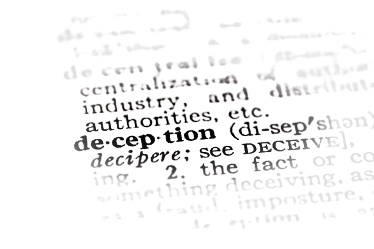

ARBEJDSMARKEDET
AI kan føre til udbredt jobtab og øget ulighed, især for lavt kvalificerede arbejdere, medmindre arbejdsmarkedet tilpasser sig
MILJØET
AI's vækst forværrer miljøproblemer med øget energiforbrug, e-affald og ressourceudtømning
KONKURRENCE
Intens konkurrence inden for AI-udvikling kan presse virksomheder til at tage farlige risici, hvilket potentielt kan føre til katastrofale resultater
KRIGSFØRELSE OG TERRORISME
AI kunne blive brugt som våben, hvilket gør krigsførelse mere ødelæggende og gør det muligt for enkeltpersoner at skabe avancerede, skadelige teknologier
MISINFORMATION
AI øger potentialet for udbredt misinformation, hvilket gør det sværere at skelne mellem sandhed og løgn
